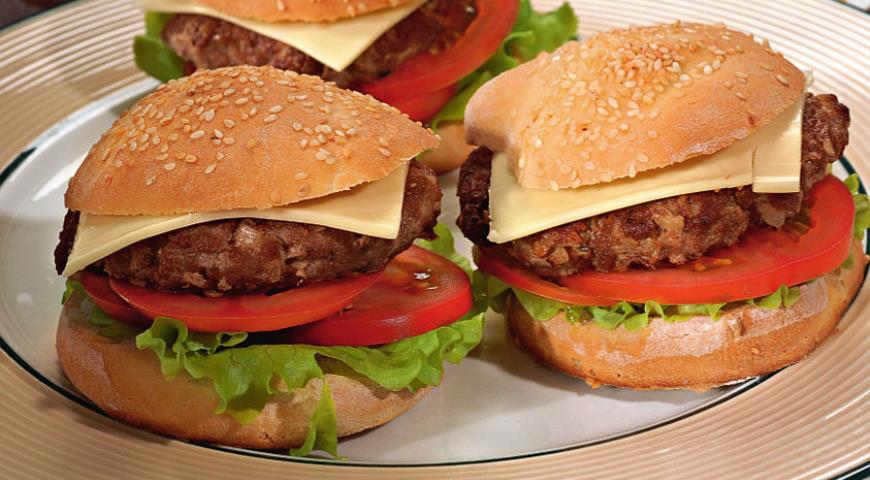

Классический американский бургер для жителей США — не просто еда, а часть жизни, культуры, если хотите! И хотя по одной из версии появления на свет данного блюда автором был эмигрант из Гамбурга, это не отменяет того факта, что придумано оно было в Новом Свете. И дальше дело пошло! В 1904 году на ярмарке в Сент-Луисе бургеры «распробовали», и они стали набирать популярность. А через 30 лет, когда Уолтер Андерсон основал в Канзасе сеть закусочных White Castle Hamburger, блюдо уже можно было смело называть гастрономическим символом Америки. В наше время классический американский бургер готовят по всему свету. Но чтобы быть уверенным в качестве, лучше попробовать воспроизвести этот сэндвич дома, на собственной кухне. Наш рецепт вам в помощь!
Приготовить котлеты для домашних бургеров. С хлеба срезать корку, мякоть замочить в теплом молоке, затем слегка отжать. Лук и чеснок очистить, измельчить. К фаршу добавить размоченный хлеб, лук, чеснок, яйцо. Посолить, поперчить и тщательно вымесить. Поставить в холодильник на 30–40 мин.
Достать охлажденный фарш их холодильника и выложить на рабочий стол. Разделить фарш на порции и вылепить влажными руками 8 плоских котлеток диаметром примерно 6 см.
Разогреть в сковороде растительное масло и обжарить котлетки для домашнего бургера на сильном огне, по 4 мин. с каждой стороны. Уменьшить огонь и готовить под крышкой 5 мин.
Подготовить остальные ингредиенты домашнего бургера. Помидоры и листочки салата вымыть, хорошо обсушить бумажным полотенцем. Помидоры нарезать тонкими кружочками.
Булочки разрезать вдоль пополам. Положить на 8 нижних половинок булочек для домашних бургеров по листочку салата, кружочку помидора и жареной котлетке.
Накрыть котлетки пластинами сыра и оставшимися половинками булочек. Перед подачей домашние бургеры поместить в разогретую до 180 °С духовку на 6–7 минут.
Настоящий бургер далёк от фастфуда. Это блюдо со своими канонами, где остаётся немалый простор для кулинарной фантазии. Следуйте этим рекомендациям, и ваши бургеры будут идеальны.
Если вы хотите сделать домашний бургер более полезным и сочным, замените хлеб в фарше тертой на средней терке морковкой. Благодаря этому котлетка приобретет еще и очень интересный вкус.
Чтобы мясной фарш домашнего бургера получился более нежным, добавьте в компанию к мякоти говядины, не слишком жирную свинину (например, вырезку). Пропорции — 1:1.